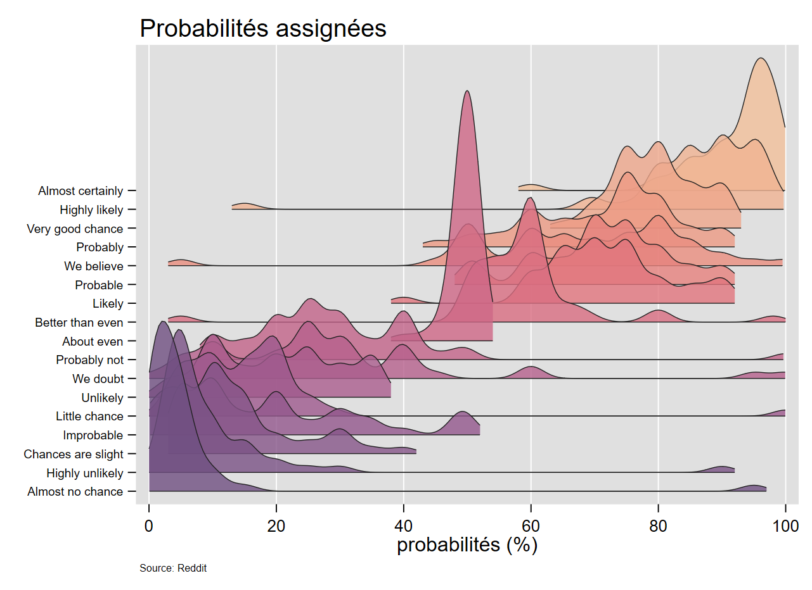

07 Juillet 2022: Chapitres 1 à 3 en ligne. Aller à l’onglet formation dans la barre de navigation.
06 Juillet 2022: Formation chapitres 1 à 3.
Lien vers le nouveau support de formation en format pdf [chapitre 1 à 3]:
Suivi des mises à jour: https://github.com/mthevenin/stata_graphiques#readme
gridgeDepuis 2020, des programmes permettent de générer ce type de graphiques: joyplot (A.Naqvi) et joy_plot (F.Rios-Avila). La première commande, malgré une maj récente, présente toujours des problèmes concernant le report des informations sur l’axe discret, triées en sens inverse chez moi.
A partir d’un programme écrit à l’automne 2020, et en restant au plus près de la fonction ggride de R, j’ai également programmé une commande: gridge. Elle permet, entre autres, de paramétrer le tri les modalités de l’axe discret à partir d’une fonction autorisée avec egen (mean, median, sd….), de choisir librement un intervalle de report des courbes sur y. Egalement, comme les courbes représentent des estimations de densités, le nombre d’observations minimales a été fixé à 10. Si ce critère n’est pas respecté, les valeurs de la variable y sont affichés pour faciliter un éventuel regroupement.
|
 |
J’étais complétement passé à côte de la fonction axis du package egenmore de Nj.Cox. Elle permet de construire un axe discret ordonné en récupérant automatiquement les labels d’une variable. Les programmes de la v1 pour générer des graphiques de types lollipop ou haltères qui étaient particulièrement complexes et long se retouvent, et pas qu’un peu, simplifiés:
Exemple
sysuse nlsw88, clear
drop if inlist(occupation,9,10,12)
egen mwage = mean(wage), by(occupation)
egen occ = axis(mwage occupation) , label(occupation)
twoway scatter occ mwage ///
|| dropline mwage occ, horizontal ///
|| , ylab(1/10, valuelabel) legend(off)Je décrouve également l’option labelvalue pour x/ylabel() qui permet d’affecter directement les labels d’une variable catégorielles à un axe.
fabplot [Nj.Cox - 2021]- Contrôle des effets spaghetti (courbes) et paella (nuage de points)
- Commande externe
fabplotprogrammée en 2021 par Nj.Cox - J’ai ajouté une option pour modifier les courbes au second plan, NJ.Cox ayant toujours tendance à bloquer l’habillage de ces commandes graphiques. La commande a été renommée
fabplot2et s’installe via github. - Exemple avec à gauche un graphique, peu lisible, qui empile 9 courbes (effet spaghetti); et à droite un graphique small-multiple qui contrôle plutôt bien cet effet indésirable.
 > >
|
 > >
|